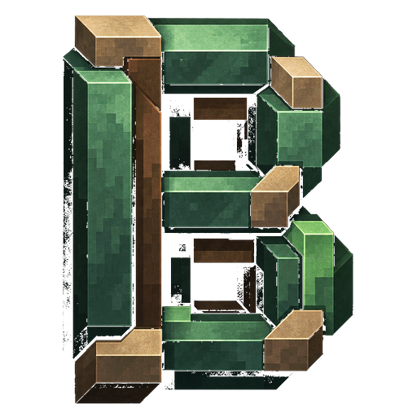

DEIN SYSTEM FÜR VINTAGE STORY
01 / WÄHLE DEINE PERSPEKTIVEBismutSYSTEM
Deine Welten. Deine Mods. Dein Setup.
Wähle eine Facette und entdecke das System. BISMUT SYSTEM / VINTAGE STORY

BISMUTSYSTEMDeine Welten. Deine Mods. Dein Setup.
Wähle eine Facette und entdecke das System.